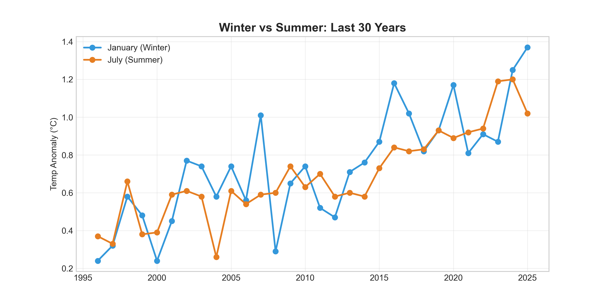
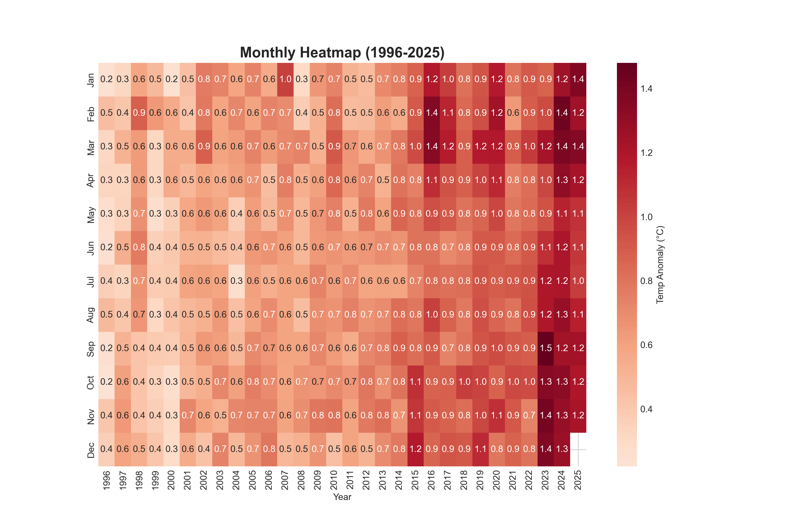

We analyzed the warming rate per decade specifically for this period:
Conclusion: Winter (Jan) is warming faster than Summer (Jul).
Comparing the temperature anomalies of January (Blue) and July (Orange) over the last 29 years.

A detailed look at every month. Darker red indicates higher temperature anomalies.

Generated by EcoPulse Seasonal Analyzer